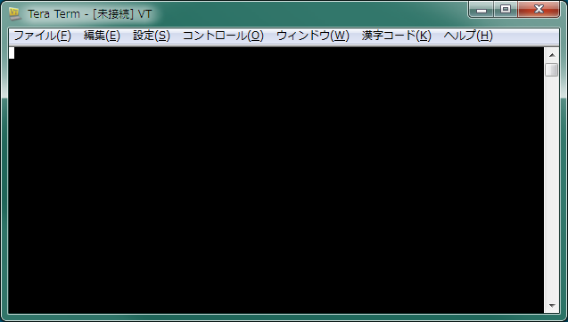
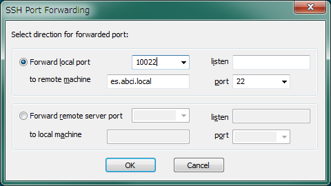
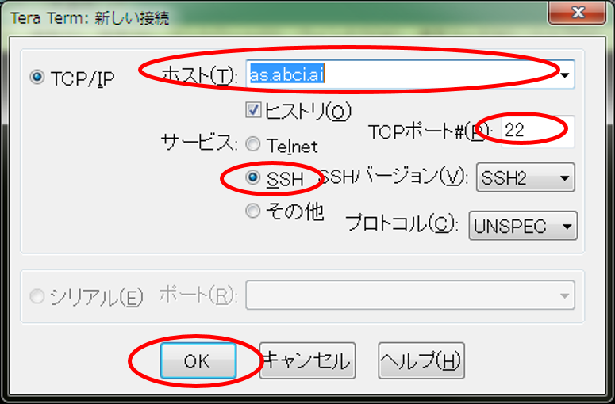
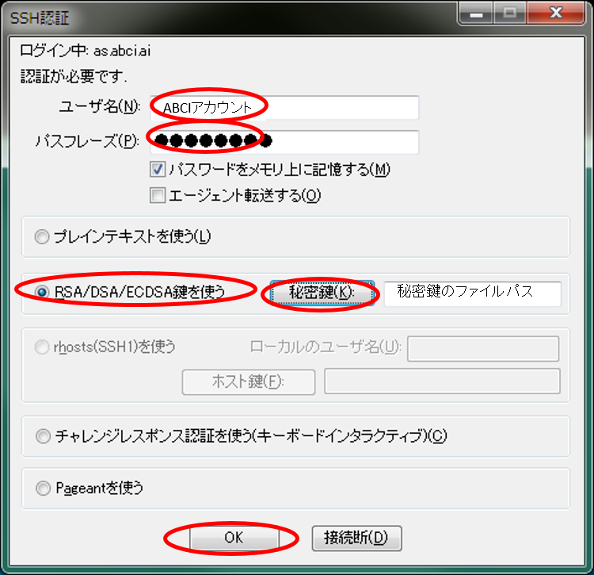
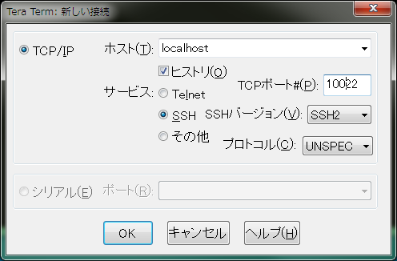

Tera Termの利用
ここでは、Windowsな利用可能なSSHクライアントである、Tera Termを用いたインタラクティブノードへのログイン手順を示します。OpenSSHクライアントなどコマンドラインベースのSSHクライアントを利用したログイン手順は、インタラクティブノードへの接続を参照してください。
インタラクティブノードへのログインは、以下手順で実施します。
- Tera Termを起動し、SSHトンネル情報を設定
- アクセスサーバ(as.abci.ai)にログインして、SSHトンネルを作成
- 別のTera Term画面を起動して、SSHトンネルを用いてインタラクティブノードにログイン
Note
事前にABCI利用者ポータルにてSSH公開鍵の登録が必要です。
SSHトンネル情報の設定
-
Tera Term の起動
Tera Term起動直後に表示される新しい接続画面は[キャンセル]ボタンで閉じ、未接続のTera Termを画面を残します。
↓

-
SSHポート転送画面の表示
Tera Termの[設定]メニューを開き[SSH転送]を選択し、SSHポート転送画面を表示します。
-
ポート転送の追加
[追加]ボタンをクリックし、SSHポート転送の設定画面を表示してください。
-
SSHポート転送の設定
SSHポート転送の設定画面で以下の表の設定値を入力します。ローカルのポートはお使いのシステムで許容されているポート番号の中から任意の値を設定可能ですが、他設定は固定値です。設定が完了したら、[OK]ボタンをクリックして前の画面に戻ります。
項目 画面と設定値 設定画面  ローカルのポート システムで許されている任意のポート番号 (例: 10022) リモート側ホスト es.abci.local または es (固定値) ポート 22 （固定値） -
設定が追加されていることを確認し、[OK]ボタンをクリックしてTera Term の画面に戻ります。
Warning
Tera Termの画面は閉じないでください。この画面を使って、次節でアクセスサーバへの接続を行います。
アクセスサーバへの接続
ここでは、アクセスサーバの接続手順を説明します。
-
接続情報の入力画面の表示
前章で設定したTera Termの[ファイル]メニューを開き、[新しい接続]画面を表示します。
-
アクセスサーバへの新規接続
接続先にアクセスサーバ（as.abci.ai）を指定し、SSHで接続します。設定は以下のとおりです。
項目 画面と設定値 設定画面  ホスト as.abci.ai TCPポート 22 サービス ssh 設定が完了したら、[OK]ボタンをクリックしてSSHの認証に移ります。
-
SSHの認証情報を入力します。設定は以下のとおりです。
項目 画面と設定値 設定画面  ユーザ名 ABCIアカウント パスフレーズ 秘密鍵のパスフレーズ 認証方法 RSA/DSA/ECDSA鍵をつかうにチェック 秘密鍵 登録した公開鍵の秘密鍵ファイルパス 設定が完了したら、[OK]ボタンをクリックしてアクセスサーバにログインします。ログインに成功すると以下の画面が表示されます。ABCIにログイン中は、このログインセッションを維持する必要があります。
Warning
画面上で何らかのキーを入力するとSSH接続が切断されてしますので注意してください。
インタラクティブノードへの接続
ここでは、インタラクティブノードへの接続手順を説明します。
-
Tera Termの起動と接続設定
新規にTera Termを起動し、インタラクティブノードに接続します。設定は以下のとおりです。
項目 画面と設定値 設定画面  ホスト localhost(固定） TCPポート SSHトンネル情報の設定で設定したポート番号 (画面例: 10022) サービス ssh （固定） 設定が完了したら、[OK]ボタンをクリックし、SSHの認証に移ります。
-
認証（インタラクティブノード）
インタラクティブノードの認証は、アクセスサーバと同じです。アクセスサーバの認証方法を参照し、SSHの認証情報を入力してください。
設定が完了したら、[OK]ボタンをクリックしてインタラクティブノードにログインしてください。ログインに成功すると以下の画面が表示されます。